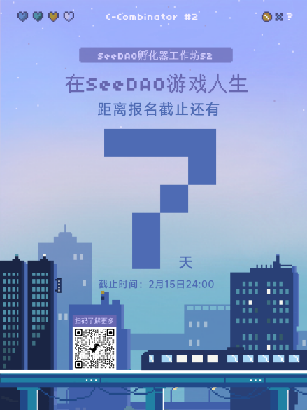

作为SeeDAO推出的战略孵化器，
C-Combinator旨在为Web3创造者提供
最前沿的教学指导、
强大的校友网络与社区支持，
成为Web3的创新助产师。
本次战略孵化器我们希望借由
C-Combinator
「报名-制作-展示」的三个环节，
将你的创意（计划书）变成一个最简易的可使用产品/研究报告（Demo），
帮助 Web2 的打工人
变成 Web3 的创造者。

而本次SeeDAO孵化器工作坊S2报名环节也已经进入到了最后的冲刺阶段，还有一周报名截止（2.15日）。
为了更好的帮助所有报名的参赛队伍进行项目辅导，我们邀请了7位大咖组成豪华导师阵容围绕本季主题从不同的方面，来为大家做本季的孵化器内部公开课。
| 2/18 | 课程1-SeeDAO 的实践分享#2（20:30-22:00） | 白鱼 |
| 2/19 | 课程2-如何为社区项目获得资助 （15:00-16:30） | Bob（GitcoinDAO steward） |
| 2/25 | 课程3-DAO 治理与游戏机制设计 （20:30-22:00） | 独立之光 VP |
| 3/1 | 课程4-DAO 治理与 DAO 工具选择 （20:30-22:00） | Yao（Metaforo founder） |
| 3/4 | 课程5-新机会：智能钱包（20:30-22:00） | 知县（UniPass founder） |
| 3/8 | 课程6-新机会：Web3 新消费模式 （20:30-22:00） | CHAO（Web3 投资人，FWB、SeedClub 贡献者） |
| 3/11 | 课程7-新机会：创作者经济共创模式 （20:30-22:00） | 屏风（Web3 随意门 Co-host） |
同时我们也邀请到了S1赛季项目的成员来为大家从参赛角度做分享和答疑
| 2/19 | Deschool 分享会（20:30-20:50） | Rebecca |
| 2/26 | DaoLink 分享会（20:30-20:50） | SS |
| 3/5 | EnSoul 分享会（20:30-20:50） | Tingfei |
| 3/12 | Web3 大学 分享会（20:30-20:50） | 舟舟 |
也请所有还在筹备的小伙伴抓紧时间报名！
我们将以业内最前沿的知识背景、
最顶级的导师资源、
从实践而来的宝贵方法论、
饱满的社区力量，
以及最重要的
——去中心化的方式，
来装点你的创意，
助力你成为这场游戏的Champion！
报名链接
报名链接：⬇
排版：子鱼
审核：SuanNai